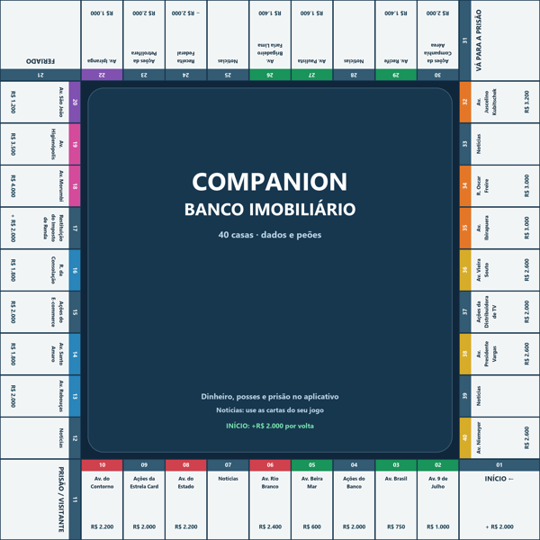

Companion no Tabletop Simulator
40 casas, oito peões, dois dados físicos e avanço opcional pelo resultado. A parte bancária continua no Companion.
Baixar mesa para Tabletop

Como abrir
- Extraia o ZIP.
- Copie
Companion-Tabuleiro.json e Companion-Tabuleiro.png para Documentos/My Games/Tabletop Simulator/Saves. - No Tabletop, abra Games → Save & Load e escolha Companion Banco Imobiliário — Tabuleiro.
- Escolha a cor do seu peão. Clique em Rolar dados e depois Avançar peão, ou jogue manualmente.
Para multiplayer, crie uma sala e convide seus amigos no Tabletop. É necessária conexão para carregar o tabuleiro. Turnos, duplas, prisão e pagamentos são controlados pelos jogadores e registrados no aplicativo. Use suas cartas físicas de Notícias e títulos de posse.
Pacote inicial: a importação e física ainda precisam de validação dentro do Tabletop. A mesa não sincroniza automaticamente o dinheiro com o aplicativo.
Abrir o Companion bancário · Instruções completas